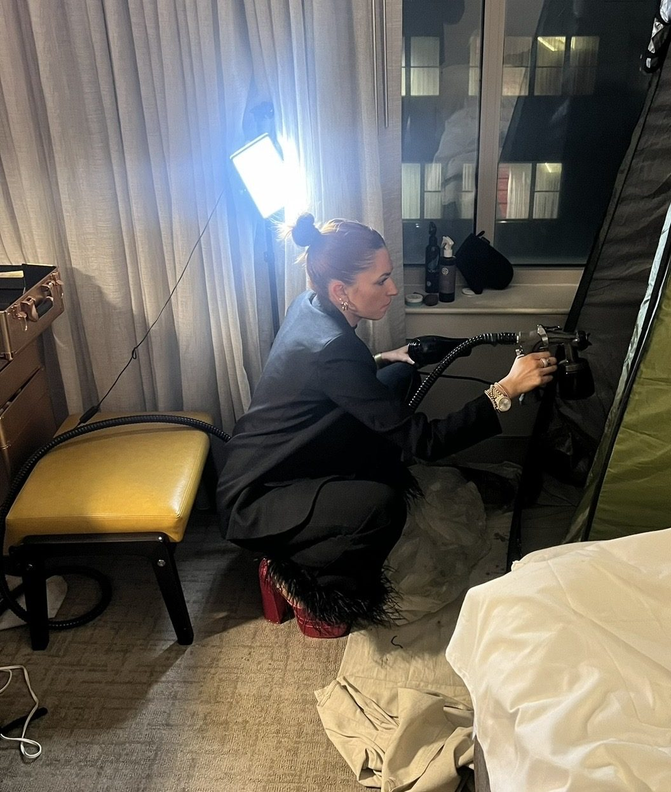
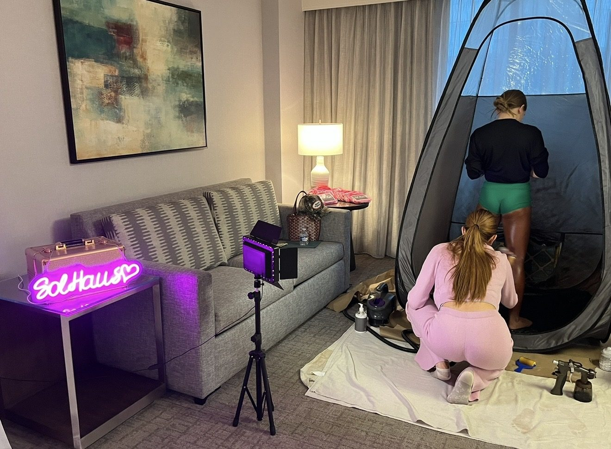

Before your glow
Things to know before your glow.
What to expect, how to prep, and how to protect and prolong your tan.
The Sol Haus experience
Glow, made personal.
A luxury appointment that comes to you — tailored from the first consultation to your final rinse.

Personalized shade selection
Your shade is matched to your skin tone, undertones and the look you're going for.
Convenient mobile appointments
We bring the glow to your home, venue or getting-ready suite.

Professional application
Even, airbrushed coverage with careful attention to detail.
Custom contouring options
Optional sculpting with shade to add soft dimension where you'd like it.
Prep & aftercare guidance
Personal instructions before and after, so your glow develops and fades beautifully.
before your glow
Prep like a pro.
Good prep is the secret to an even, long-lasting tan.
- Exfoliate 24 hours before. Use an oil-free scrub, focusing on knees, elbows, ankles and hands.
- Shave or wax ahead of time. Shave at least 24 hours before; wax at least 24–48 hours before.
- Shower before your appointment and skip lotion, oils, deodorant, perfume and makeup on the day.
- Book other treatments first. Facials, nails, massages and waxing are best done before your tan.
- Tie hair up and remove jewelry before we begin.
after your glow
Protect & prolong.
How you treat your tan in the first days makes all the difference.
- Wait to rinse for the time recommended at your appointment, and avoid sweating or water until then.
- First rinse: lukewarm water only, no soap, then pat — don't rub — dry.
- Moisturize daily with a gentle, oil-free moisturizer to help your glow fade evenly.
- Go easy on exfoliation, long hot showers, saunas and chlorine while your tan lasts.
- Remember: a spray tan does not protect against the sun — keep wearing SPF.
which glow is for you?
Express vs. traditional.
| Traditional | Express | |
|---|---|---|
| Best for | Overnight development and a classic, fuss-free glow. | Busy schedules — rinse sooner and get on with your day. |
| Development | Usually left on for several hours, often overnight. | Shorter development window; the longer you wait, the deeper the result. |
| Rinse | Timing confirmed at your appointment. | Timing tailored to the depth you'd like. |
| Result | Custom shade, matched to you. | Custom shade, matched to you. |
what to wear
Dress for the drive home.
- Loose, dark clothing — think a robe, wide-leg pants or a maxi dress.
- Slip-on shoes or flip-flops rather than socks and tight shoes.
- Avoid tight waistbands, bras with straps you love, leggings and light-colored fabrics.
- During your tan you can wear disposable underwear, your own dark underwear or a swimsuit — whatever you're comfortable in.
questions, answered
Frequently asked questions.
How long does a spray tan last?
Most spray tans last around 5–10 days, depending on your skin, prep and aftercare.
Will I look orange?
Your shade is custom-matched to your skin tone and the look you want, and we'll talk through it before we begin.
Do you come to me?
Yes — Sol Haus is a mobile service. We bring everything needed to your home, venue or getting-ready location within our service area.
Where do you travel?
We serve Long Island and all five boroughs of New York City — Manhattan, Brooklyn, Queens, the Bronx and Staten Island.
Can I get a spray tan if I'm pregnant or have skin conditions?
Please check with your doctor first and let us know before your appointment so we can talk through your options.
How far ahead should I book for a wedding or competition?
As early as possible — popular dates book up quickly. See The Bridal Edit and the competition calendar.
What is your cancellation policy?
Please see our cancellation & booking policy.